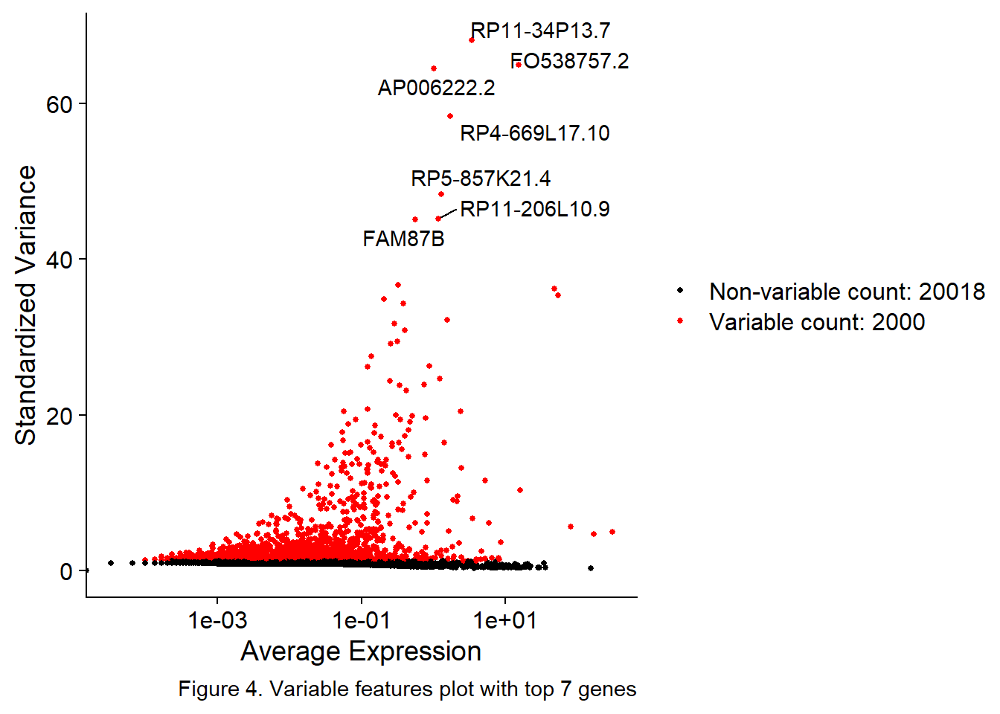
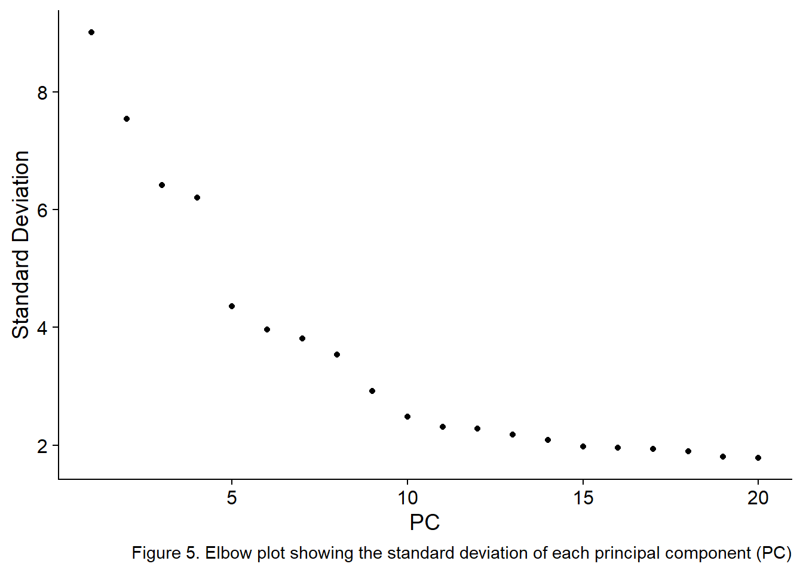
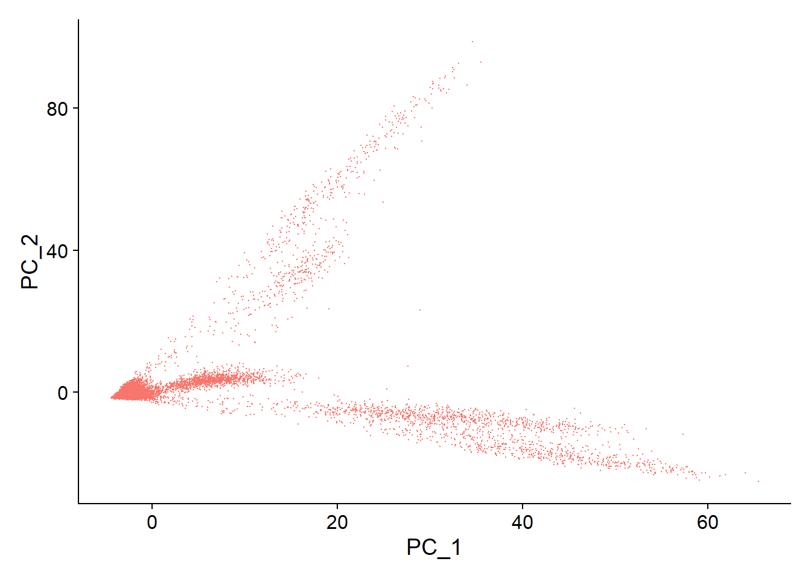

Portfolio FFR
2024-12-01
1 Single cell analysis of Crohn’s dissease
Crohn’s dissease is characterized by chronic inflammation of the gastrointestinal [GI] tract. This causes the patient to suffer from diarrhea, stomach aches, fevers, weight loss, tiredness and blood in the feaces.
This document got the data from CZ CELLxGENE database [https://cellxgene.cziscience.com/collections/2b02dff7-e427-4cdc-96fb-c0f354c099aa] and this data was collected in this [https://pmc.ncbi.nlm.nih.gov/articles/PMC7060942/] study.
The method of this study is to firstly isolate lamina propria cells from both uninflamed and inflamed biopsies of 11 patients. The the 22 ileal specimens where used for single-cell transcriptomics and a UMI identifier is used to differentiate the samples.
1.2 Loading in the data set from the CZ CELLxGENE database
I do have a local copy due to not necessarily wanting to fully rely on the database. The decision was eventually made to make the crohns_dissease_seurat object from the url provided in the database. Due to being unable to provide the data set in the same github repository as the other files in this portfolio. This is the best solution i could come up with wanting to make this open and reproducible science.
1.3 QC subsetting
Quality control is always a very important part of data analysis. As the saying goes “garbage in, garbage out”. The three metrics are number of features which is the number of unique genes detected low amount of features indicates low quality cells or droplets and at the other side of the spectrum high feature counts indicate cells clumping together. The number of counts is the second of the three, this variable indicates the number of total molecules in a cell. The third metric is percentage of mitochondrial reads. A high concentration of mitochondrial reads often indicates dying cells. The quality control is done by visualizing and sub-setting this is done in figure 1.
# Visualize QC metrics as a violin plot
VlnPlot(crohns_dissease_seurat, features = c("nFeaturess_RNA", "nCounts_RNA", "percent_mito"), ncol = 3, pt.size = FALSE)+
labs(caption = "Figure 1. QC metrics vizualizing all cells and artifacts in the dataset.")
Filtering cells with 200–2500 features (genes) ensures that cells with sufficient gene detection are included and excluding low-quality or dead cells with few features. At the other side of the spectrum also stopping potential clumps of cells from being in the data set these clumps often exhibit a high number of features. The threshold of <10% mitochondrial RNA likely removes cells in cellular stress or apoptosis. The mean amount of mitochondrial DNA varies between cell types.
#setting the limits on exceptable values to select alowing some [10%] mitochondrial dna into the data set
subset_crohns_dissease <- subset(crohns_dissease_seurat, subset = nFeaturess_RNA > 200 & nFeaturess_RNA < 2500 & nCounts_RNA > 200 & percent_mito < 10)
VlnPlot(subset_crohns_dissease, features = c("nFeaturess_RNA", "nCounts_RNA", "percent_mito"), ncol = 3, pt.size = FALSE)+
labs(caption = "Figure 2. QC metrics vizualizing all cells and artifacts in the subset of the data set")
The data quality is good overall, with most cells falling within expected ranges. Filtering cells with low features, low total counts, or high mitochondrial content will further enhance the dataset quality and make it suitable for downstream analysis.
plot1 <- FeatureScatter(subset_crohns_dissease, feature1 = "nCounts_RNA", feature2 = "percent_mito")
plot2 <- FeatureScatter(subset_crohns_dissease, feature1 = "nCounts_RNA", feature2 = "nFeaturess_RNA")
plot1 + NoLegend() + plot2 + NoLegend()+
labs(caption = "Figure 3. Scatterplots showing QC metrics distributions across cells")
1.4 Preperations
Normalization, making data human readable and preparing the data for future functions.
Find variable features
The FindVariableFeatures function in Seurat is used to identify genes that exhibit high variability across cells in a given dataset, which are likely to be biologically significant using the selection method vst.
From the seurat website:
“ vst: First, fits a line to the relationship of log(variance) and log(mean) using local polynomial regression (loess). Then standardizes the feature values using the observed mean and expected variance (given by the fitted line). Feature variance is then calculated on the standardized values after clipping to a maximum (see clip.max parameter). ”
After that extracting the variable features and storing the top 7 as an object in R.
# Normalize the data
norm_subset_crohns_dissease <- NormalizeData(subset_crohns_dissease)
# Find variable features
FVF_crohns_dissease <- FindVariableFeatures(norm_subset_crohns_dissease, selection.method = "vst")
variable_features <- VariableFeatures(FVF_crohns_dissease)
top7_gene_names <- head(variable_features, 7)1.5 Variable features plot
Feature plot is used to visualize the most variable genes in the dataset, using Seurat’s VariableFeaturePlot function. The plot displays the variation in gene expression across cells the top 7 genes are displayed with their gene symbol.
# Plot variable features
plot3 <- VariableFeaturePlot(FVF_crohns_dissease)
# Label points with gene names using the build in solution instead of to 10 gene names
plot4 <- LabelPoints(
plot = plot3,
points = head(variable_features, 7),
labels = head(FVF_crohns_dissease@assays$RNA@meta.features$gene_symbols, 7),
repel = TRUE
)
# Display the plot
plot4+
labs(caption = "Figure 4. Variable features plot with top 7 genes")
1.6 PCA
The Scale Data function scales data before dimensional reduction techniques like PCA. It ensures that highly-expressed genes don’t dominate. Otherwise the results can be skewed.
all.genes <- rownames(FVF_crohns_dissease)
scaled_data <- ScaleData(FVF_crohns_dissease, features = all.genes)
pca_crohns <- RunPCA(scaled_data, features = VariableFeatures(object = scaled_data)) Choosing the right amount of dimensions to analyse and visualize is important. This is done by manually looking at the elbow plot in Figure 5.
I choose 15 PC’s because the Elbow plot shows that the first few principal components (PCs) have much higher variance (standard deviation), while later PCs explain less of the variance. By selecting 15 components, you keep most of the important information while reducing the amount of processing power needing to be used.
ElbowPlot(pca_crohns)+
labs(caption = "Figure 5. Elbow plot showing the standard deviation of each principal component (PC)")
 ## Reductional assays
Seurat generates heatmaps to visualize the expression of the genes per PC, PC1 through PC15.

Firstly the FindNeighbors and FindClusters functions are applied to make/calculate the clusters. Here after the UMAP was made using the RunUMAP function to project the data into a dimplot readable frame so it can be displayed into Figure 7 using dimplot. DimPlot function was employed to visualize the UMAP projection, with cells colored by their respective clusters.
umap_data_crohns <- FindNeighbors(pca_crohns, dims = 1:15)
umap_data_crohns <- FindClusters(umap_data_crohns, resolution = 0.5)## Modularity Optimizer version 1.3.0 by Ludo Waltman and Nees Jan van Eck
##
## Number of nodes: 29915
## Number of edges: 937472
##
## Running Louvain algorithm...
## Maximum modularity in 10 random starts: 0.9079
## Number of communities: 19
## Elapsed time: 5 secondsumap_fig_crohns <- RunUMAP(umap_data_crohns, dims = 1:15)
DimPlot(umap_fig_crohns, reduction = "umap")
# run this code if you do not have this RDS file
# find markers for every cluster compared to all remaining cells, report only the positive ones
#This took me 2 hours and 21 minutes
# if wanting to do this yourself run this code first to be more efficient with your time
#library(devtools)
#devtools::install_github('immunogenomics/presto')
crohns.markers <- FindAllMarkers(umap_fig_crohns, only.pos = TRUE)
# Save the results in an .rds file
saveRDS(crohns.markers, file = "~/school/DSFB2/dsfb2_workflows_portfolio/data/crohns.markers.rds")Making an enormous heatmap that takes the top five genes per cluster into account.
crohns.markers <- readRDS("~/school/DSFB2/dsfb2_workflows_portfolio/data/crohns.markers.rds")
##################### because most of the "top genes" all have a p-adjusted value of what the computer stores as zero I decided to arrange the table to also include the highest avg. log2 fold change
#crohns.markers %>%
# group_by(cluster) %>%
# dplyr::filter(avg_log2FC > 1) %>%
# distinct(gene) %>%
# slice_head(n = 5) %>%
# ungroup() -> top5
top5_genes <- crohns.markers %>%
group_by(cluster) %>%
arrange(p_val_adj, desc(avg_log2FC)) %>% # Sort by lowest p_val_adj and then highest avg_log2FC
dplyr::filter(avg_log2FC > 1) %>%
distinct(gene) %>%
slice_head(n = 5) %>%
ungroup()
DoHeatmap(umap_fig_crohns, features = top5_genes$gene) + NoLegend()